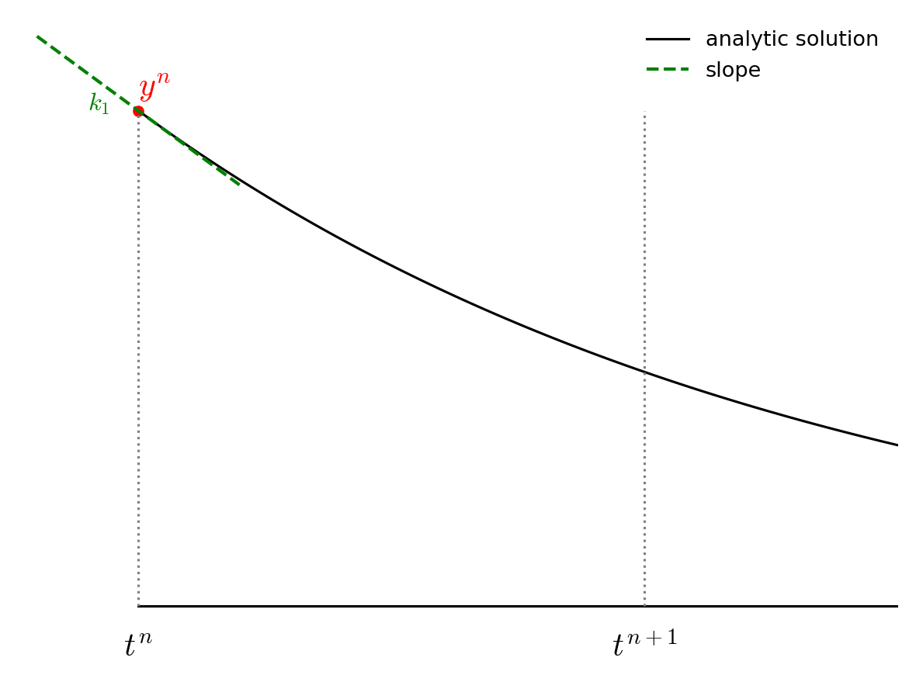
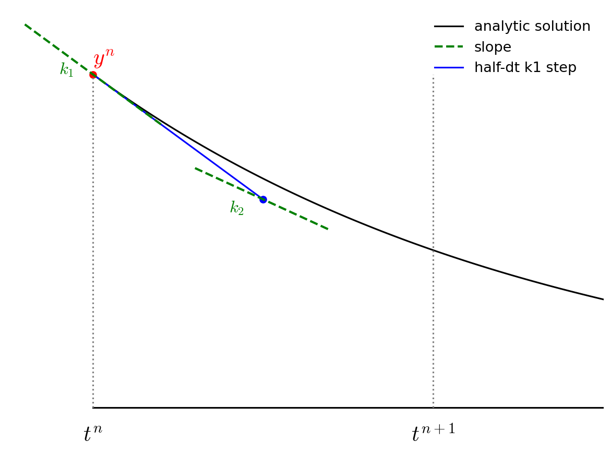
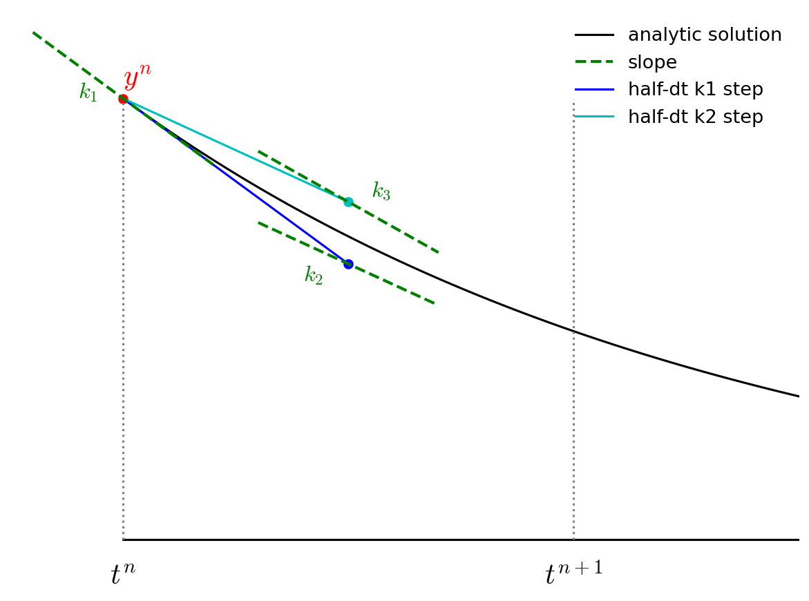
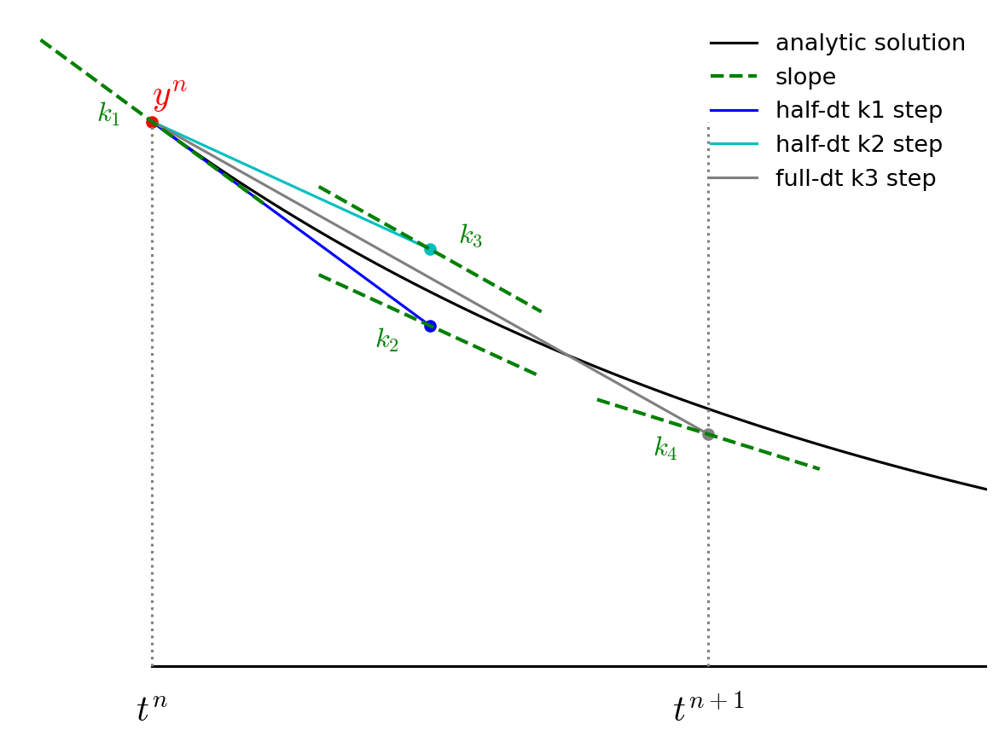
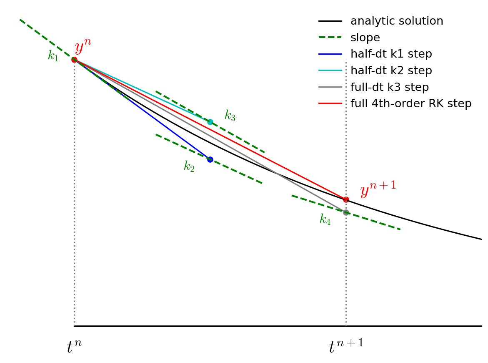
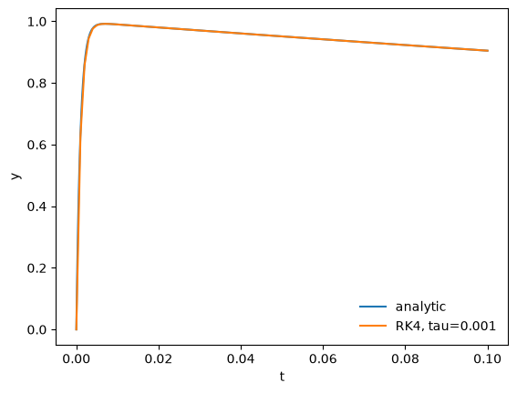
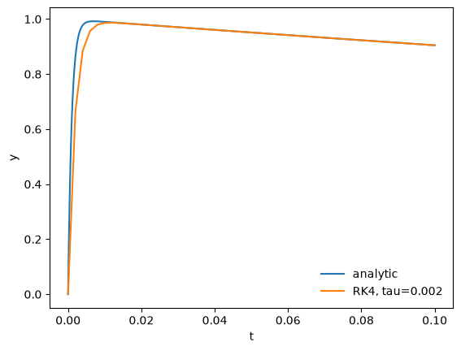
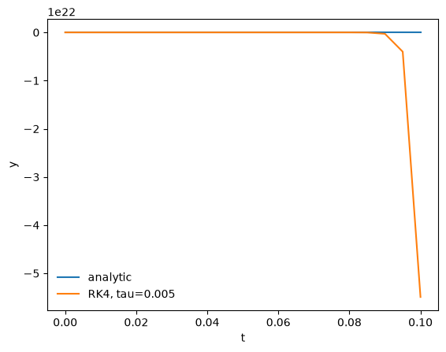
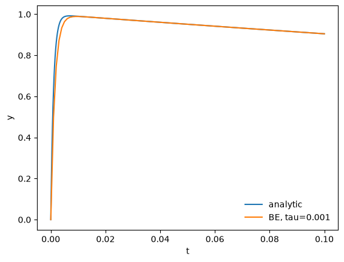
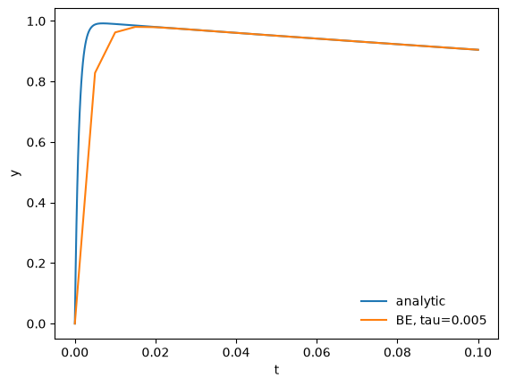

Implicit Methods#
Model stiff problem#
Consider the ODE
with \(y(0) = 0\). This has the exact solution:
This is an example of the Prothero and Robinson stiff model equation. We see that there are 2 characteristic timescales in the solution: \(\tau_1 = 1\) and \(\tau_2 = 10^{-3}\). This is a stiff ODE.
(This example comes from Byrne and Hindmarsh 1986).
import numpy as np
import matplotlib.pyplot as plt
Explicit discretization#
Let’s solve this using 4th order Runge-Kutta.
Note
4th-order Runge-Kutta evaluates the righthand side of the ODE four different times and builds the update as a linear combination of these. The figures below show this graphically.
The advance begins by estimating the derivatives (righthand side or slope) at time \(t^n\). We’ll call this \({\bf k}_1\).

We then follow the slope \({\bf k}_1\) to the midpoint in time, \(t^{n+1/2}\) and evaluate the slope there. We call the new slope \({\bf k}_2\).

We then go back to the start, but this time follow the new slope, \({\bf k}_2\) to the midpoint in time, \(t^{n+1/2}\). We again evaluate the slope here, and call it \({\bf k}_3\).

Finally, we go back to the start and follow \({\bf k}_3\) for the full timestep, to \(t^{n+1}\) and evaluate the slope there, calling it \({\bf k}_4\).

We then get the updated solution using a linear combination of the 4 slopes:

Note the similarity of RK4 to Simpson’s rule for integration.
First we need the righthand side function:
def f(t, y):
return -1.e3 * (y - np.exp(-t)) - np.exp(-t)
We’ll also have a function that provides the analytic result, for comparison:
def analytic(t):
return np.exp(-t) - np.exp(-1.e3*t)
Here’s 4th order RK
def rk4(y0, dt, tmax):
tsol = [0.0]
ysol = [y0]
t = 0.0
y = y0
while t < tmax:
ydot1 = f(t, y)
ydot2 = f(t+0.5*dt, y+0.5*dt*ydot1)
ydot3 = f(t+0.5*dt, y+0.5*dt*ydot2)
ydot4 = f(t+dt, y+dt*ydot3)
y += (dt/6.0)*(ydot1 + 2.0*ydot2 + 2.0*ydot3 + ydot4)
t += dt
tsol.append(t)
ysol.append(y)
return np.asarray(tsol), np.asarray(ysol)
Let’s make a function that can plot this.
def plot(t, y_numerical, label=None):
fig = plt.figure()
ax = fig.add_subplot(111)
tfine = np.linspace(0, t.max(), 1000)
ax.plot(tfine, analytic(tfine), label="analytic")
ax.plot(t, y, label=label)
ax.set_xlabel("t")
ax.set_ylabel("y")
ax.legend(frameon=False)
return fig
Now we can integrate it. To start, let’s pick a \(\tau\) that is equal to the shortest timescale in the analytic solution.
tau = 1.e-3
y0 = 0
tmax = 0.1
t, y = rk4(y0, tau, tmax)
fig = plot(t, y, label=f"RK4, tau={tau}")

We see that we do quite well – the analytic solution and numerical solution are right on top of one another.
Now let’s try some larger \(\tau\)s…
tau = 2.e-3
t, y = rk4(y0, tau, tmax)
fig = plot(t, y, label=f"RK4, tau={tau}")

For \(\tau\) twice as big as the shortest timescale in the solution we do okay. We miss the initial rise (because we are not resolving the short transient), but we get the longterm behavior correct.
tau = 5.e-3
t, y = rk4(y0, tau, tmax)
fig = plot(t, y, label=f"RK4, tau={tau}")

For \(\tau\) five times larger than the shortest timescale the solution blows up – look at the vertical scale here.
Implicit discretization#
Now let’s try a simple first-order accurate implicit method
This is called backward-Euler. For our model problem, we can solve for the new state algebraically:
Notice that the solution doesn’t blow up as we take \(\tau \rightarrow \infty\).
def backward_euler(y0, dt, tmax):
tsol = [0.0]
ysol = [y0]
t = 0.0
y = y0
while t < tmax:
# an implicit discretication: y^{n+1} - y^n = dt ydot^{n+1}
# and then solve analytically for y^{n+1}:
ynew = (y + 1.e3*dt*np.exp(-(t+dt)) - dt*np.exp(-(t+dt)))/ (1.0 + 1.e3*dt)
y = ynew
t += dt
tsol.append(t)
ysol.append(y)
return np.asarray(tsol), np.asarray(ysol)
let’s try with the small and large timesteps we tried above:
tau = 1.e-3
t, y = backward_euler(y0, tau, tmax)
fig = plot(t, y, label=f"BE, tau={tau}")

tau = 5.e-3
t, y = backward_euler(y0, tau, tmax)
fig = plot(t, y, label=f"BE, tau={tau}")

We see that the backward-Euler / implicit method remains stable even for \(\tau\) larger than the shortest timescale of change in the problem.